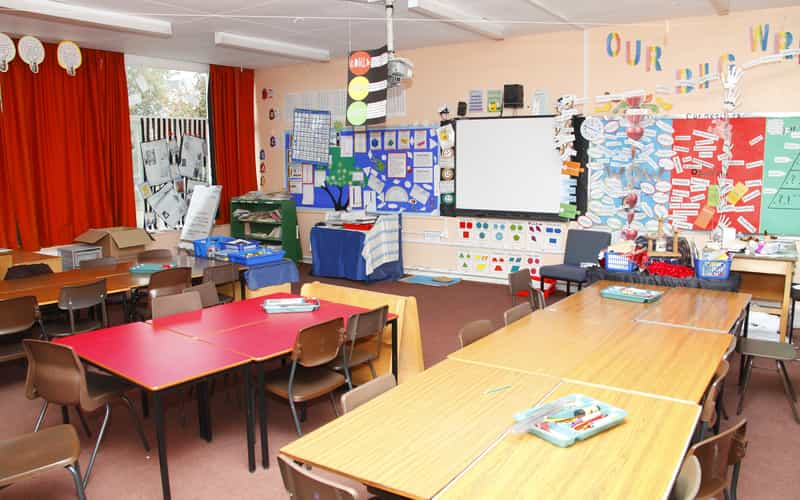

William is a writer and aspiring entrepreneur. He is from LA and currently resides in the area.


Attending school in the United States is compulsory from the time we’re about 6 until we turn 18, which is a lengthy amount of time to be a slave in a system in which you have no control. The vast majority of children are taught the same subjects, and with the same techniques. Everyone is funneled towards the same end goal.
You are conditioned for over a decade to have behaviors within a certain range, and you learn preselected information using ubiquitous techniques. This is all done to make you a productive wage slave in our capitalist economy. Unfortunately, if you do not deviate from this path and change your mindset at some point, then you will end up as a wage slave. And this is exactly what they want.
You were psychologically and physically conditioned with this system, but this conditioning can be overcome. View the system objectively for what it is.

A special kind of hell
As a result of second-wave feminism in the 1960’s as well as the onset of third-wave feminism in the late 1980’s-1990’s, the school systems we grew up in were solidified upon the grounds of a feminine-centric mindset.
It is universally understood that boys have an innate biological tendency to be physical and active. But this fact has been shamelessly ignored. The system tells you to sit down at a desk for hours at a time. There is no relief aside from small breaks during a recess or lunch. Females are fine with this, as young girls are physically tame and very respectful of authority.
But the boys are overlooked. They cannot control what their physiology is aching to do, especially at an age when their self-control is still developing. They are reprimanded and made to feel sorry about their nature, and it is deemed unacceptable if they cannot fit in with this single-minded system. They are often drugged with powerful psychoactive chemicals to force their conformity.
As a young student I felt trapped in this system. I was the boy who could never focus and always had too much energy. I was punished continuously for it, both indirectly and directly, and struggled in school as a result. It is easy to harbor negative emotions towards a system that makes you feel like an outcast. I hated the teachers and the school system for trying to make me into someone I was not.
Subconsciously I knew it was absurd that I was being punished for not fitting in with their agenda. But I did not know how to consciously recognize or express this at a young age, so I developed a sort of passive-aggressiveness towards it all. Combine being ostracized with the intense need of a maturing child to fit in and keep up with his peers, and you have a recipe for soaring student drop-out rates and complete system failure.
Our educational system truly is failing boys everywhere.
Gurian’s book presents statistics that boys get the majority of D’s and F’s in most schools, create 90 percent of the discipline problems, are four times more likely than girls to be diagnosed with ADHD and be medicated, account for three out of four children diagnosed learning disabilities, become 80 percent of the high school dropouts, and now make up less than 45 percent of the college population” (http://www.huffingtonpost.com/lori-day/why-boys-are-failing-in-a_b_884262.html)
This is a quote from a Huffington Post article in reference to Michael Gurian’s book The Minds of Boys: Saving Our Sons from Falling Behind in School and in Life. He uses facts and statistics to support the idea that our school systems are completely failing to meet the needs of their male populations.
Gurian also made another observation that is particularly relevant:
According to Gurian, boys learn by doing and by moving their bodies through space. The more emphasis is placed on the development of early reading skills, and the less emphasis is placed on a healthy amount of movement and experiential learning, the more disadvantageous our schools will be for males.
I can count on one hand the number of times my teachers used any type of “experiential learning” method. And yet we are punished and looked down upon if we don’t excel in a structure that is clearly disadvantageous to us.
He just realized that his grades don’t matter
These methodologies also overlap with the performance evaluations that are present in schools everywhere. Here is the method: you sit at a desk, the teacher talks, and you write. Or, you use a book and write whatever it tells you to. You are then tested on this information in one way: a written exam. If you do not do well, you receive a poor grade, a veritable punishment for your lacking performance.
What does this grade do for your future learning experience? Absolutely nothing. It does, however, make you feel inferior and unintelligent, regardless of how many times you tell yourself otherwise. You may continue to receive this same type of feedback throughout the years, all based on the same evaluation methods. The negativity can compound if you aren’t performing well enough or keeping up with what the system wants you to do.
Grades also make you care infinitely more about your future grades than any amount of “learning” you accomplish. School is supposed to be about learning, isn’t it? The school system that you’ve been raised in evaluates your intelligence with such a slim range of methods that it is disgraceful. Yet nobody questions it, and nobody re-evaluates what the grades mean with a proper perspective.
This man was the epitome of the school misfit
Gentlemen, you cannot let grades define your goals or self-perception. They are meaningless. It is a system of evaluation based on the short term. They never mattered and they never will.
This isn’t to say that you should just flunk out of school, but understand the importance of the real elements in your life. I have received many poor grades in my schooling years, and it doesn’t bother me anymore. I realize it has no bearing on my intelligence or future success. I refuse to let another person’s evaluation stop me from achieving what I desire.
Understand that you were dealt an educationally adverse hand, and that there are multiple cultural and societal issues that need to be changed in order to better meet these needs on a system-wide basis.
No matter what happened to you in your past, you are not your past, you are the resources and the capabilities you glean from it. And that is the basis for all change. – Jordan Belfort
If you do not enjoy school, struggle with the classroom setting, or just generally feel helpless, know that you are not alone, and have never been alone. I was there, and many others were too.
Don’t let school stop you from going after your dreams. Don’t let anything stop you.
{kind=link}
{kind=link}
{kind=link}
{kind=link}